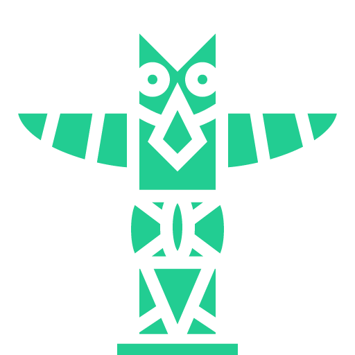

Shaman
Shaman are people in close attunement with the spirits.
 Character Setup
Character Setup
 Stats and Saves
Stats and Saves
Choose 2 of the following stats and increase them by 1:
- Wisdom
- Dexterity
- Fortitude
As a Shaman, you have the following:
- +2 Wisdom Saves
You also have:
- 1 Religion
- 1 Nature
- 1 Perception
- -1 Sleight of Hand
- -1 Arcana
- -1 History
Your starting  Health is 7.
Health is 7.
When Leveling Up...
Whenever you gain a Level after Level 1, you gain:
- +5 Health
- +1 Skill Point
- +1 extra known Spell or Maneuver
Other Things
If your Intelligence is at least 2, choose one Common, Wild or Elemental language you can speak.
As a Shaman, you have a spirit animal which represents you. Choose one of the following spirit animals. You will permanently gain the bonuses of that spirit animal.
 Spells and Abilities
Spells and Abilities
Wisdom is your Main Stat.
Spell DC is 10 + Main Stat.
You start with 3  Charges.
Charges.
You regain all Charges back when you Long Rest.
You can change your known Spells (not Talents) when taking a long rest.
Number of known maneuvers: 1 + Your Intelligence
Number of known spells: 2 + Your Intelligence + Your Level
All Shaman-specific abilities are considered spells.
 Spell List
Spell List
- Basic Spells (expand)
-
- Acid Burst
- Poison Spray
- Burning Breath
- Bonfire
- Cleansing Flames
- Control Flames
- Control Water
- Control Earth
- Detect Poison and Disease
- Inflict Wounds
- Guidance
- Hollow Touch
- Mastery
- Mind Blast
- Purify Food and Drink
- Prestidigitation
- Resistance
- Quicksand
- Thunder Clap
- Normal Spells (expand)
-
- Chaining Grasp
- Absorb Element
- Alarm
- Animate Dead
- Charming Word
- Cure Wounds
- Cure Poison
- Cure Disease
- Dispel Magic
- Feather Fall
- Fog Cloud
- Cleansing Smite
- Distort Vision
- Flash
- Fake Sound
- Influence Beast
- Mage Hand
- Scorching Rays
- Shadow Clone
- Speak With Animals
- Speak With Plants
- Turn Undead
- Wild Heart
- Wild Roots
- Dancing Weapon
- Crackling Lightning
- Heat Metal
- Water Walk
- Higher Level Spells (expand)
-
- Fire Ball
- Invisibility
- Levitate
- Spare the Dying
- Spider Climb
- Translation
- Wraithwalk
Starting Abilities
Animal Spirit (Special)
Choose one of the 4 animal spirits. You gain an Ability and a bonus to a Skill Check depending on your Spirit Animal.
Bear - You gain Bear's Roar and +2 to Athletics.
Wolf - You gain Wolf's Leap and +2 to Intimidation.
Eagle - You gain Eagle's Sight and +2 to Perception.
Owl - You gain Owl's Foresight and +2 to Knowledge.
 Specializations
Specializations
- Berserker, a heavy fighter, guided by the ways of the spirits, both wise and strong - a combination to fear
- Seer, one who can perceive beyond the eyes and ears, who can get to the root of your mind and soul
- Witch Doctor, a strange ally when it comes to helping, and en even stranger foe when it comes to combat
Berserker
LOREM IPSUUUM!!
You start with the following Berserker abilities:
Path of the Berserker (Passive)
Your total Defense is always halved (even with buffs), rounded down, no matter what armor type you are wearing.
Your total Health is increased by 50% (buffs, item effects and health from passive Abilities are not increased).
Your extra Health Pool does not increase with your Health.
Spirit Strike (0.5 Actions)
 1 meter
1 meter
A target makes a Wisdom save.
If it fails, deal to it 33% of its missing health as True damage.
You can land this once per Long Rest (but you can try multiple times).
Talents
At Level 2, choose one of the following abilities and gain it permanently:
Reincarnation (1 Action)
 1 week
1 week
Stabilize an unconscious creature or revive a creature that died recently (12 hours maximum).
This puts the creature at 1 Health.
You can do this on yourself if you are dead (still uses 1 Action if in an encounter).
Spirit Draw (Reaction)
An ally can spend 1 Charge and 1 Action to draw in a part of your soul, with your permission.
That ally can try to cast Spirit Strike once and use your spirit animal Ability once.
Lasts until either of you cancel it, or until either's next Rest.
An ally can't draw your soul more than once per Long Rest.
Spirit Companion (1 Action)
 8 Health
8 Health
You summon your spirit animal into the material world.
It has the following stats:
- Health: 1 or 6 if Bear
- Defense: 8
- Movement: 6 or 9 if Wolf
- Stats and skills: Like yours
Your pet takes its turn at the same time as you do, and always has the same initiative as yours.
Your pet gets unsummoned if it moves more than 30 meters away from you.
On your turn, you can command it to move, but it can't take its own Actions.
You and your pet share the same Actions on a turn.
If your spirit animal dies, you can always summon it back.
The spirit animal stays in the material world for up to 10 minutes.
You also gain the following abilities (Pet Attack and Wargsight).
If you have 1 Action, your pet can use 0.5 Actions to attack and you can use 0.5 Actions to attack too, or your pet spends 1 Action and you skip your Actions, etc.
Pet Attack (0.5 Actions)
The pet melee attacks a target.
The attack deals 1d10 + (Your Main Stat) Force damage.
You can do this once per turn.
Wargsight (Channeled)
While channeling, you can act and sense through your pet's body, but you can't control yourself.
Seer
Video morituri...
You start with the following Seer abilities:
Spirit Bond (1 Action)
 Long Rest
Long Rest
Touch an ally.
Whenever either of you makes a Skill Check, add the higher Skill bonus from either of you instead of the normal Skill bonus.
You can do this once per Long Rest, and lasts until your next Long Rest.
Mind Sight (1 Action)
 1 Charge
1 Charge
 15 meters
15 meters
Try to Stun a target you can clearly see.
If you succeed, it also takes 2d6 damage, or half of that if you fail.
Then, if you succeeded, you can then see through the target's eyes until you make another action or move.
If the target is unaware and it rolls 7 or less (total), it doesn't notice what just happened.
You can choose not to deal the damage for this ability. You see more and more blurry as the target gets farther away. At 100 meters, the spell breaks.
Talents
At Level 2, choose one of the following abilities and gain it permanently:
Mind Link (0 Actions)
 1 Charge
1 Charge
Establish a mind connection with a willing ally.
For 4 hours, you can talk to eachother telepathically.
Dream Walk (Channeled)
 1 Charge
1 Charge
 6 meters
6 meters
Choose a sleeping target you can see.
It makes a Wisdom save with Disadvantage.
If it fails, you can alter their dream to your liking.
The target wakes up if they die in the dream, or the DM might have the target make another save for waking up later.
Far Sight (Reaction)
 1 Charge
1 Charge
Gain +3 on any Wisdom skill check (before you roll).
You can stack this as many times as you like for the same roll.
Witch Doctor
Lorem, ipsum, snitel, dolor!
You start with the following Witch Doctor abilities:
Spirit Guides (Special)
You are in constant communion with certain spirits.
These spirits can be the souls of people you knew who died, spirits of other animals, etc.
These spirits will sometimes guide your way and aid you in your endeavors.
After every Long Rest, roll 2d6 and remember what you rolled.
These dice are called Guide Dice.
You can freely consume one Guide Dice and add it to any d20 roll you or your party makes.
Ancient Dance (10 minutes)
 1 Charge
1 Charge
With this ancient Dance you can either heal an ally, or damage a foe.
o Heal: You can heal an ally who was damaged by a certain creature.
Consuming a bone of that creature, an organ or a cup of its blood, you can heal the ally for 3d6 Health.
o Damage: Gather and consume a piece of hair or body part of a creature.
You damage that creature for 3d8 Psychic damage.
With Ancient Dance, you can only heal once per Long Rest, and damage once per Long Rest.
Talents
At Level 2, choose one of the following abilities and gain it permanently:
Voodoo Magic (1 Action)
 1 Charge
1 Charge
 6 meters
6 meters
A non-epic target makes a Wisdom save.
If it fails, for its next 2 turns, you can choose that enemy's actions as long as it would seem reasonable to that enemy (decide with your DM).
For example, you can make a goblin run or recklessly attack one of your party members. But you can't make a guard jump off a cliff, because that's not what it would normally do.
Incorporeal Form (1 Action)
 1 Charge
1 Charge
You become a bodyless soul for up to 8 hours and enter a willing ally.
While inside the ally's body, you can communicate with them mentally, and only they can see you.
You can slightly peek outside of their body, and move your arms, upper body and head as if you were a ghost originating from that ally's body.
o You can't move yourself, but you always move with that ally.
o You can't do any physical actions (because you are basically a ghost and can't touch anything or anyone).
o You can cast spells as normal.
o You follow your own Initiative in combat.
o You can't take damage from external sources, but you feel every body sensation that ally feels.
You can freely exit their body and revert back to your physical self using 1 Action.